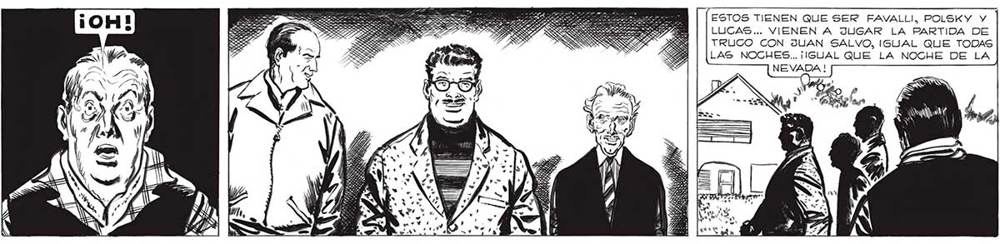
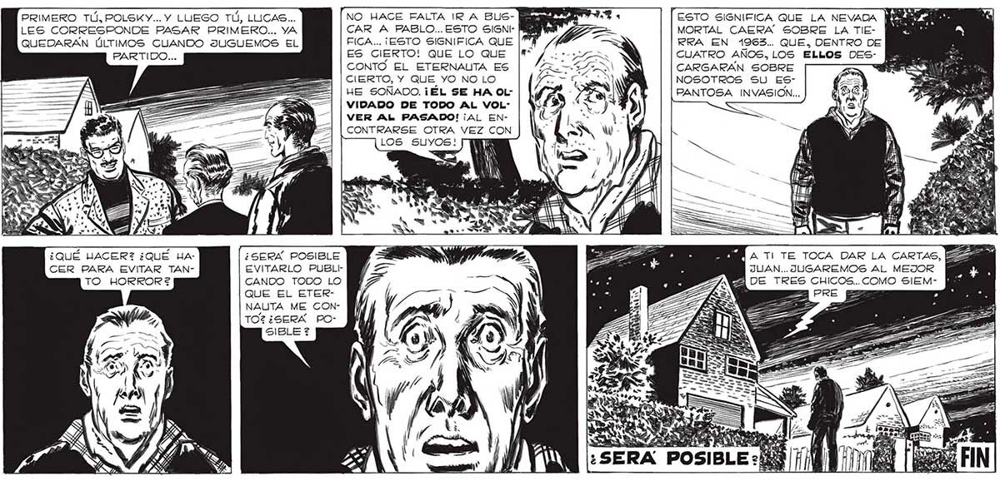

362 PRIMERO TÚ, POLSKY... Y LUEGO TÚ, LUCAS... LES CORRESPONDE PASAR PRIMERO... YA QUEDARAN ÚLTIMOS CUANDO JUGUEMOS EL PARTIDO... AAA === EE ¿QUÉ HACER? ¿QUÉ HA- ¿SERX POSIBLE CER PARA EVITAR TAN- EVITARLO PUBLICANDO TODO LO QUE EL ETERNAUTA ME CONTOZ¿SERX PONO HACE FALTA IR A BUSCAR A PABLO... ESTO SIGNIFICA... ¡ESTO SIGNIFICA QUE ES CIERTO! QUE LO QUE CONTO EL ETERNAUTA ES CIERTO, Y QUE YO NO LO HE SOÑADO. ¡ÉL SE HA OLVIDADO DE TODO AL VOLVER AL PASADO! ¡AL ENCONTRARSE OTRA VEZ CON ESTOS TIENEN QUE SER FAVALLI, POLSKY Y LUCAS... VIENEN A JUGAR LA PARTIDA DE TRUCO CON JUAN SALVO, IGUAL QUE TODAS LAS NOCHES... ¡IGUAL QUE LA NOCHE DE LA NEVADA ! “ESTO SIGNIFICA QUE LA NEVADA MORTAL CAERA SOBRE LA TIERRA EN 1963... QUE, DENTRO DE CUATRO AÑOS, LOS ELLOS DESCARGARAN SOBRE : SS NOSOTROS SU ESPANTOSA INVASION... SS AE > A TI TE TOCA DAR LA CARTAS, E JUAN... JUGAREMOS AL MEJOR DE TRES CHICOS.. COMO SIEM

